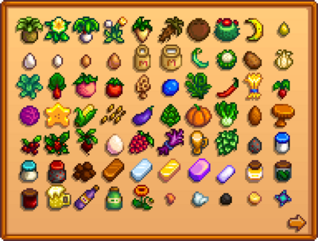
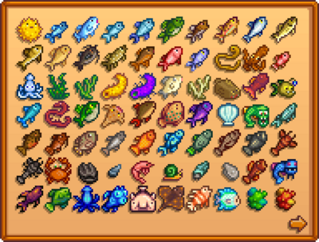
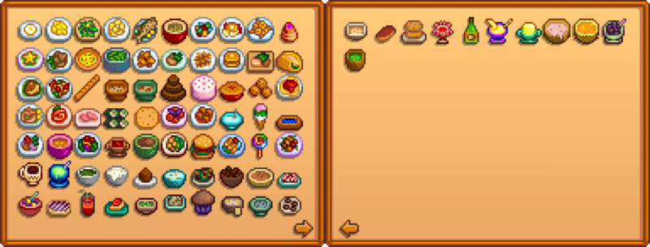

Sammlung
Zur Navigation springen
Zur Suche springen


Verschickte Gegenstände


Erste Seite
Zweite Seite
Dritte Seite
Fisch
Einträge werden nach dem erfolgreichen Fischen hinzugefügt.

Erste Seite
Zweite Seite
| Seegelee | Grundeln |
Artefakte
Einträge werden hinzugefügt, wenn man ein Artefakt gefunden hat. Das Artefakt muss nicht an das Museum gespendet werden um regestriert zu werden. Falls es in einer Schatzkiste beim Angeln gefunden wird, kann es sein das es nicht in der Sammlung angezeigt wird.
Minerale
Einträge werden nach dem aufsammeln des Minerals hinzugefügt. Das Mineral muss nicht an das Museum gespendet werden um regestriert zu werden.
Kochen
Notiz: Schneckengericht und Fischeintopf sind in ihren Positionen vertauscht, im vergleich zur Kochanzeige.

Erste Seite
Zweite Seite
| Hummer-Bisque | Ahornriegel | Krabbenkuchen | Krabbencocktail | Ginger Ale | Bananenpudding | Mango Klebreis | Poi | Tropisches Curry | Tintenfisch-Tintenravioli |
| Moos-Suppe |
Erfolge
Siehe: Erfolge
Briefe
Siehe: Briefe
Geheime Notizen
Siehe: Geheime Notizen
Tagebuch Fetzen
Siehe: Tagebuch Fetzen